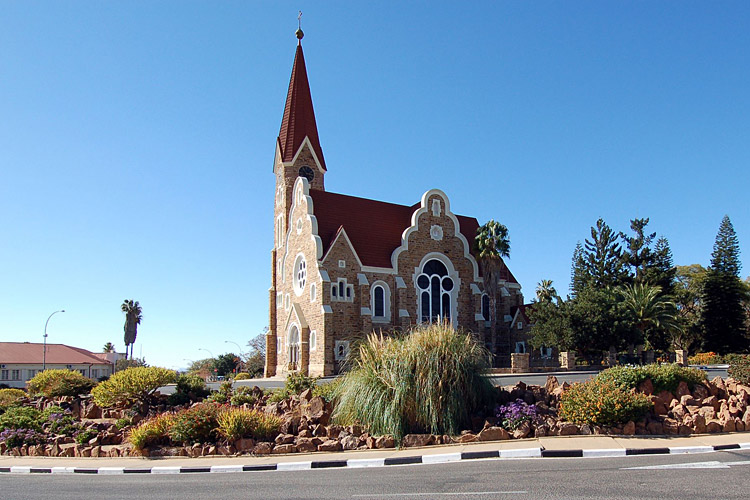

| PHOTO ANIMAL ENJOY |
Windhoek빈트후크 나미비아의 수도인 빈트후크에는 예쁜 이름의 길들이 있습니다. 길의 이름을 살펴보며 다니는 것도 하나의 재미가 될 것입니다. 또한, 빨간 지붕의 루터 교회인 크리스투스키르헤부터 나미비아 남부지역인 기베온에 떨어진 45억 살의 기베온 운석이 전시되어 있기도 하며 국립 박물관인 알테 페스테에서는 이곳의 문화를 엿볼 수 있습니다. Etosha National Park에토샤 국립공원 나미비아의 수도인 빈트후크에는 예쁜 이름의 길들이 있습니다. 길의 이름을 살펴보며 다니는 것도 하나의 재미가 될 것입니다. 또한, 빨간 지붕의 루터 교회인 크리스투스키르헤부터 나미비아 남부지역인 기베온에 떨어진 45억 살의 기베온 운석이 전시되어 있기도 하며 국립 박물관인 알테 페스테에서는 이곳의 문화를 엿볼 수 있습니다. |